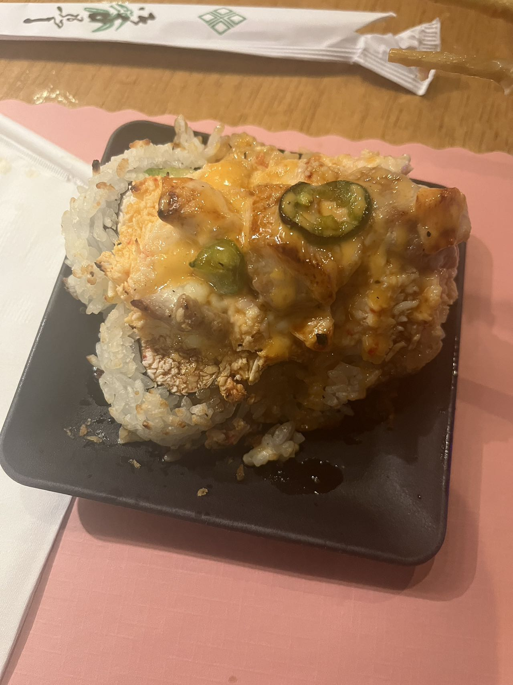
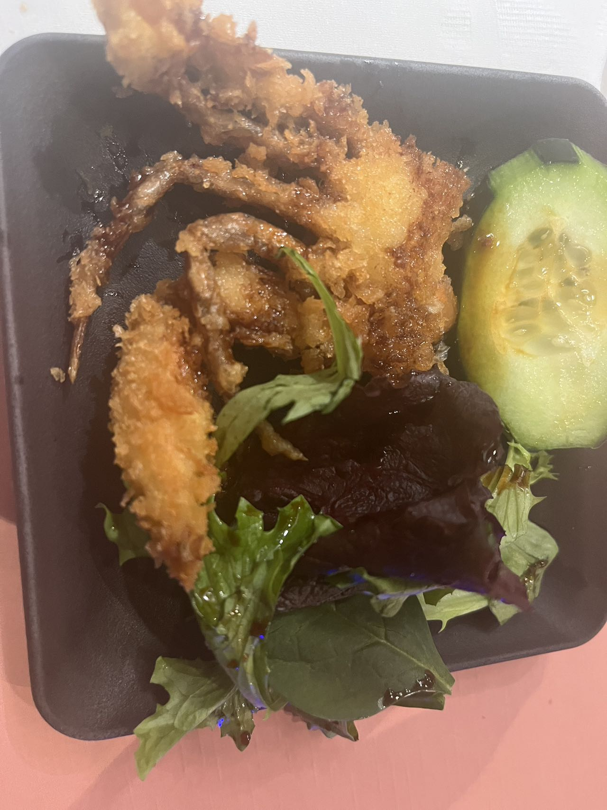
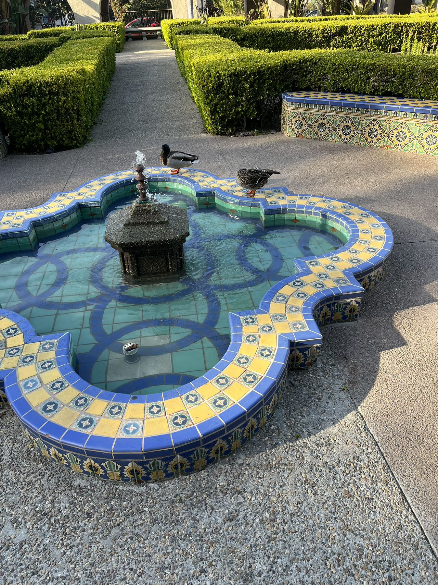
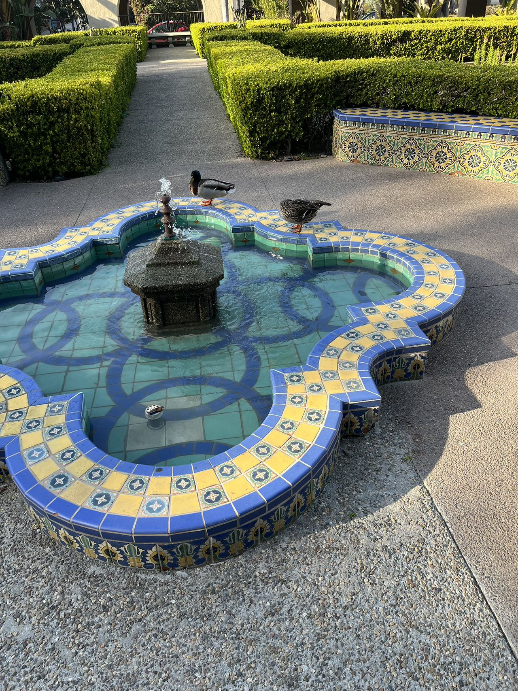
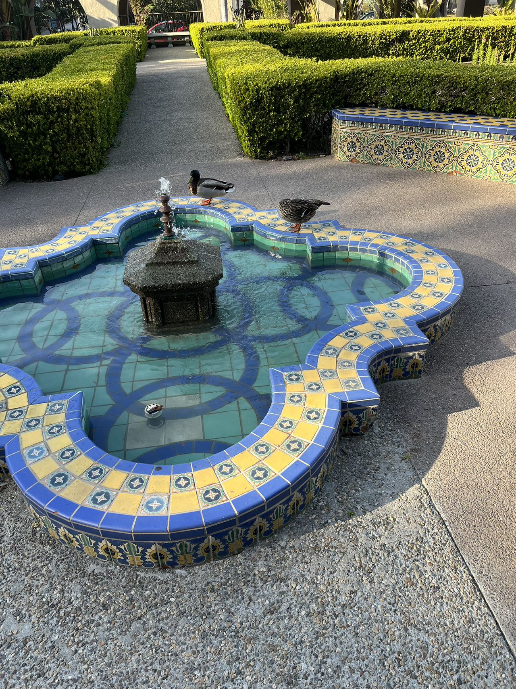

Taiyan Li
With a fervent passion for the world of statistics and a commitment to leveraging data to forge new pathways in understanding, I have dedicated over a decade to honing my skills as a statistical analyst. My journey began at the crossroads of curiosity and numbers, leading me to pursue a degree in Statistics, followed by a Master's in Data Science, laying the foundation for my professional path.
Throughout my career, I have had the privilege of working across diverse sectors—healthcare, finance, and technology—each presenting unique challenges and learning opportunities. In healthcare, I developed predictive models that contributed to personalized medicine approaches, a venture that taught me the profound impact data analysis can have on individual lives. Transitioning to finance, I focused on risk assessment models, which sharpened my skills in identifying patterns and predicting market trends, thereby guiding investment strategies. More recently, in the tech industry, my work has centered on user data analysis, enhancing product development, and tailoring user experience, showcasing the versatility of statistical applications.
My professional ethos is grounded in the belief that statistics is not just about numbers but about stories waiting to be told. It's a tool for unveiling truths, challenging assumptions, and driving innovation. This belief has propelled me to not only contribute to my work but also to share my knowledge through speaking engagements at conferences, workshops, and guest lectures at universities. Teaching others about the power of data analysis and statistical methods has become a parallel passion, allowing me to give back to the community that has shaped my career.
Beyond my professional life, I find solace in the arts—painting and music, primarily. These creative outlets offer me a different kind of data to analyze, one that's more abstract and subjective but equally rich in patterns and insights. They remind me that at the heart of all data, whether numbers or notes, lies a story, an emotion, or a discovery waiting to unfold
As I look to the future, I am excited by the prospects of artificial intelligence and machine learning in statistics. My current focus is on how these technologies can further transform data analysis, making it more intuitive and impactful. By staying at the forefront of these advancements, I aim to continue contributing to my field, pushing the boundaries of what is possible with data, and inspiring the next generation of statisticians to explore the untapped potential lying within numbers.
In sum, my career is more than a series of positions held or projects completed; it's a continuous journey of learning, discovery, and application. It's about bridging the gap between the empirical and the theoretical, the quantitative and the qualitative, and ultimately, about finding the human element in the data.Engagement with the wider statistical community has been a cornerstone of my professional journey. I am an active member of several professional associations, including the American Statistical Association (ASA) and the International Statistical Institute (ISI), where I contribute to discussions on ethical data practices and the evolution of statistical methodologies in the digital age. These platforms have provided invaluable opportunities for collaboration, allowing me to both learn from and contribute to the global dialogue on statistical innovation. My involvement has also led me to advocate for increased accessibility to statistical education, particularly for underrepresented groups in STEM fields. By fostering a more diverse and inclusive statistical community, I believe we can unlock a richer, more comprehensive understanding of the world around us. This commitment to community, education, and ethical practice is not just a professional obligation but a personal mission, reflecting my belief in the power of statistics to effect positive change in society.
Experience
Education
UC Riverside
Portfolio


 

